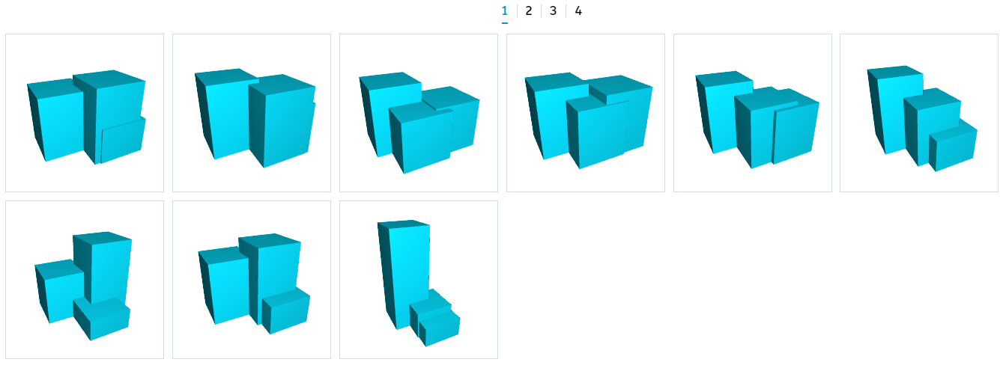

Visualising Results in Refinery
After Refinery has run the generative process, the results are displayed in both geometric form and through a series of charts. All of the resulting views are interlinked and selecting an option in one view will highlight it in the other view currently displayed. If Dynamo is running in automatic mode in the background, selecting an option will also update the graph to show this design.
Design Grid
The design grid shows each option as a 3d geometrical thumbnail that can be individually rotated, zoomed and panned to explore the design in more detail. The order of the thumbnails can be sorted based on the inputs or outputs of the Dynamo script, with a toggle for both ascending and descending values.

Design Table
The design table replaces the design grid if chosen and lists each option in a table form with each column representing the values for the inputs and outputs.

Scatterplot
The first chart Refinery uses is a scatterplot. A scatterplot is a type of mathematical diagram that uses cartesian coordinates to display values across a set of data. Refinery allows you to select what values are displayed along both the X and Y axis as well as through size and colour in a 4-dimensional view. These can be chosen from the inputs or outputs of the Dynamo graph. Selecting a circle from the graph space will highlight the chose option in the design grid or design table.

Parallel Coordinates
The other chart available in Refinery is a parallel coordinates graph. This chart show a set of vertical parralel lines, equally spaced, that represent the inputs and outputs. Each design option is represented as a polyline whose vertices sit on each parralel axis. The position of the polylines vertices on the axis corresponds to the value of the input or output. The graph can be filtered by dragging the selection on each vertical axis.
The kind of visualization you choose for your project may vary depending on what kind of process you are running. If you are running an optioneering process it can be beneficial to visualise it using a parallel coordinates chart as it will be easier to filter options, while running a multi objective optimisation using a scatterplot chart will make it easier to find the best trade-off between two objectives.